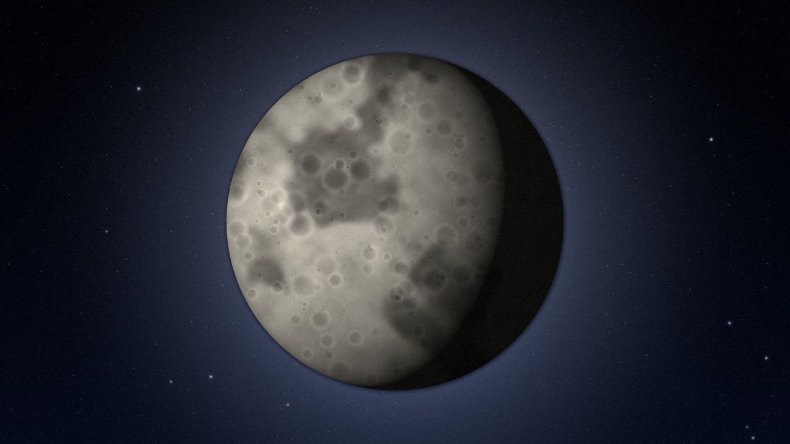

Quan sát Mặt Trăng bằng ống nhòm
Bảo Quý Phát · cập nhật
Mặt Trăng là mục tiêu dễ nhất cho người mới: sáng, to, và ống nhòm 7x50 hay 10x50 là đã thấy hố va chạm rõ ràng.
- Chọn đêm: trăng khuyết hay bán nguyệt đẹp hơn trăng tròn, vì ánh sáng chiếu xiên làm hố nổi khối.
- Nhìn dọc ranh giới sáng tối: chỗ này bóng đổ dài nhất nên thấy hố và dãy núi rõ nhất.
- Giữ cho vững: tựa khuỷu tay lên lan can, hoặc gắn ống nhòm lên chân máy ảnh.
- Đợi mắt quen: tránh nhìn đèn đường, mắt thích nghi bóng tối mất khoảng 20 phút.
Video giới thiệu Góc Sao
Đọc nội dung video giới thiệu
Video 18 giây, không có lời thoại, chỉ có nhạc nền. Nội dung theo từng đoạn:
- 0 - 3 giây: Nền trời đêm nhiều sao, biểu tượng trăng khuyết vàng cùng ngôi sao trắng hiện dần. Chữ trên hình: "Góc Sao". Nhạc nền êm bắt đầu.
- 3 - 7 giây: Mặt Trăng to dần, chuyển động rất chậm. Chữ: "Bạn đã bao giờ ngắm Mặt Trăng qua ống nhòm?"
- 7 - 11 giây: Sao Thổ có vành đai xoay nhẹ giữa nền sao. Chữ: "Hành tinh, chòm sao, mưa sao băng…"
- 11 - 15 giây: Vài vệt sao băng chạy chéo màn hình, dải Ngân Hà mờ phía sau, có tiếng vút nhẹ. Chữ: "Mỗi tháng một buổi quan sát miễn phí"
- 15 - 18 giây: Logo trăng khuyết và chữ "Góc Sao", bên dưới là lời kêu gọi màu vàng: "Đăng ký tại trang Liên hệ". Nhạc nhỏ dần rồi tắt.
Ảnh minh họa

Muốn xem thêm ảnh Sao Thổ, Sao Mộc, Orion... thì vào Thư viện.
Podcast: Mẹo quan sát (khoảng 40 giây)
Đọc bản chữ (transcript) của podcast
Xin chào, đây là Mẹo quan sát của Góc Sao. Nghe xong là đi ngắm sao được liền.
Mẹo một. Tìm chỗ tối, tránh đèn đường, rồi để mắt làm quen với bóng tối khoảng hai mươi phút.
Mẹo hai. Bắt đầu với ống nhòm, đừng vội mua kính thiên văn, vì ống nhòm nhẹ và nhìn được vùng trời rộng.
Mẹo ba. Xem lịch Mặt Trăng, đêm trăng non mới thấy sao rõ nhất. Còn muốn ngắm Mặt Trăng thì chọn đêm trăng lưỡi liềm.
Mẹo bốn. Mang áo ấm, nước uống và đèn pin ánh sáng đỏ để không làm lóa mắt người bên cạnh.
Hẹn gặp bạn ở buổi quan sát tới. Đăng ký ở trang Liên hệ nhé.